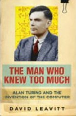

The Man Who Knew Too Much

by David Leavitt (2006)
An impulse buy, and it was good but not great. The barbaric treatment Turing received over being gay seems to be the thing that initially attracted the author's interest in Turing's life, and while that is a worthwhile and thought-provoking topic, it is a little over-played here. While Turing's mathematical contributions are covered quite commendably, I'd pretty much read all of it before, and it somehow seemed to be lacking a tiny sparkle of passion that made me suspect the author had done his absolute damnedest to cover the mathematical side of Turing, because no book about him would be complete without it, but without really ever wanting to.
Rating: 7/10. Solid but not much that was new to me.